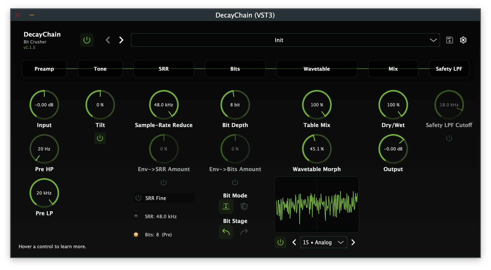

DecayChain
A bit-crusher and wavetable distortion plugin. A preamp and tone stage sits up front, the bit section can run before or after the wavetable mapper, and there are 265 original wavetables with a hex table index, table morph, envelope routing and an optional safety LPF.
- Bit-crusher with Depth (1-16 bits) and Mask (0-255 hex bitmask) modes
- 265 procedurally generated wavetables with hex index & table morph
- Preamp (±36 dB), tilt EQ, sample-rate reducer, envelope routing
- Dual DSP modes: Legacy (crunchy lo-fi) and ADAA (anti-aliased)
- 21 factory presets · VST3 & AU on macOS · VST3 on Windows

Overview
DecayChain is a bit-crusher and wavetable distortion plugin with a preamp and tone stage up front. The bit section can run before or after a wavetable mapper loaded with 265 original, procedurally generated wavetables.
The signal path runs from a soft-clipping preamp through a tilt EQ, sample-rate reducer, bit section, wavetable mapper (with morph between adjacent tables), dry/wet mix and optional safety low-pass filter to the output trim. Envelope routing modulates the SRR frequency and bit depth.
DecayChain has two DSP modes:
- Legacy is the original processing path. Wavetable lookup uses nearest-sample indexing for a deliberately crunchy, lo-fi character, and the bit crusher and wavetable stages work directly on each sample with no anti-aliasing.
- ADAA uses Antiderivative Anti-Aliasing to reduce aliasing artifacts at the base sample rate, with Simpson's rule ADAA on the bit crusher and LUT integral ADAA on the wavetable mapper.
Signal path
Audio passes through these stages in order:
- Input signal
- Preamp, ±36 dB gain with a soft-clip guard at the extremes
- Tone stage, a tilt EQ at 800 Hz with true bypass when centred
- Pre HP, a high-pass filter (20 Hz - 5 kHz)
- Pre LP, a low-pass filter (1 kHz - 20 kHz)
- SRR, the sample-rate reducer (~260 Hz → 192 kHz), with optional Fine mode
- Bit section, 1-16 bit depth or 0-255 hex bitmask, placed before or after the wavetable
- Wavetable mapper, 265 × 256-point tables with hex index 00-108
- Morph, a blend toward the adjacent table (0.0-1.0)
- Table mix, the wavetable stage dry/wet blend (0-100%)
- Dry/wet mix, an equal-power crossfade
- Safety LPF, an optional post-processing low-pass filter
- Output trim, −24 to +12 dB final level control
Features
- The bit-crusher has two modes: standard bit-depth reduction (1-16 bits) for classic staircase quantisation, and a hex bitmask (0-255) for XOR-like logic patterns and unusual harmonic textures.
- The bit section can run before the wavetable for crushed-then-shaped tones, or after it for shaped-then-crushed results. The two orderings give different distortion.
- All 265 original wavetables are procedurally generated (256 samples each, float32) and embedded via BinaryData, with no external files. A hex index display (00-108) selects the table.
- Table morph blends between adjacent wavetables. In ADAA mode, anti-aliasing is evaluated independently on both tables and linearly blended.
- An internal envelope can be routed to the sample-rate reducer, the bit depth, or both, with bipolar modulation amounts (−1 to +1), so the distortion follows the input.
- Legacy mode gives a raw, crunchy lo-fi character. ADAA mode combines Simpson's rule on the bit crusher with LUT integral anti-aliasing on the wavetable mapper.
- Adjustable high-pass (20 Hz - 5 kHz) and low-pass (1 kHz - 20 kHz) pre filters shape the input signal before the crush stages.
- A ±36 dB preamp with soft clipping drives the downstream distortion stages, and an 800 Hz tilt EQ shapes the input spectrum before crushing.
- The optional first-order safety low-pass (18 kHz default) tames harsh upper harmonics without affecting the core distortion character.
- DecayChain adds no latency to your signal chain. It makes no heap allocations on the audio thread and has denormal/NaN guards on every nonlinear boundary.
- The 21 factory presets cover categories including Lo-Fi, Drone, Drum, Bass and Ambient, with user preset management.
Controls
| Control | Range | Description |
|---|---|---|
| Preamp | −36 to +36 dB | Input gain with soft-clip guard at extremes |
| Tone | Tilt EQ | 800 Hz tilt EQ; true bypass when centred |
| SRR | ~260 Hz → 192 kHz | Sample-rate reduction with logarithmic sweep |
| Fine | On / Off | Fine-resolution SRR mode |
| Pre HP | 20 Hz - 5 kHz | Pre high-pass filter |
| Pre LP | 1 kHz - 20 kHz | Pre low-pass filter |
| Bits | 1-16 / 0-255 | Bit depth (Depth mode) or hex bitmask (Mask mode) |
| Bit Mode | Depth / Mask | Standard bit-crush vs hex bitmask |
| Bit Place | Pre / Post | Bit section before or after wavetable |
| Table | 00-108 (hex) | Wavetable index selection |
| Morph | 0.0-1.0 | Blend toward next adjacent table |
| Table Mix | 0-100% | Wavetable stage dry/wet blend |
| Table Bypass | On / Off | Bypass the wavetable stage entirely |
| Env→SRR On | On / Off | Enable envelope routing to SRR |
| Env→Bits On | On / Off | Enable envelope routing to Bits |
| Env→SRR Amount | −1 … +1 | Modulates SRR target frequency |
| Env→Bits Amount | −1 … +1 | Modulates Bit Depth / Mask |
| Dry/Wet | 0-100% | Equal-power crossfade mix |
| Safety LPF | On / Off | Post-processing low-pass filter |
| Safety LPF Cutoff | 4000-22000 Hz | Low-pass cutoff frequency (default 18000 Hz) |
| Output Trim | −24 to +12 dB | Final output level control |
| DSP Mode | Legacy / ADAA | Processing mode: raw lo-fi or anti-aliased |
Factory presets
DecayChain ships with 21 factory presets in the categories below.
| Category | Preset | Character |
|---|---|---|
| Utility | Init | Clean baseline: all defaults |
| Lo-Fi | 8-Bit Sampler | Crunchy 4-bit, pre-table |
| Experimental | Aliasing Heaven | Low SRR, post-table |
| Video | Video Nibble | Mask 0xF0 with morph 0.15 |
| Tape | Lo-Fi VHS | Warm tilt, LPF 9 kHz |
| Digital | Harsh Logic | XOR-like mask 0xAA |
| Drive | Smooth Saturator | Preamp +6 dB, subtle |
| Drone | Industrial Drone | 3-bit SRR 1.5 kHz |
| Drum | Kick Crunch | Punchy, key→Bits mod |
| Drum | Snare Shaper | Crack mask 0xE3 |
| Synth | Synth Lead Edge | Bright, 6-bit |
| Bass | Bass Fuzz Gate | Heavy mask 0xC0 |
| Bass | Bass Iron Riff | Aggressive low-end drive |
| Bass | Bass Spectral Tear | Full-spectrum bass destruction |
| Ambient | Ambient Shimmer | Airy morph 0.9 |
| Ambient | Ice Crystals | Crystalline digital texture |
| Modulation | Envelope Chopper | Rhythmic envelope gating |
| Industrial | Industrial Rhythm Guitar | Harsh rhythmic textures |
| Experimental | Mask Phase | Phase-shifted bitmask artifacts |
| Experimental | Sub Destroyer | Sub-bass obliteration |
| Experimental | Weird Guitar Artifacts | Glitchy guitar textures |
User presets are stored as .nfapreset files:
- On macOS, in
~/Library/Application Support/Nullform Audio/DecayChain/Presets/ - On Windows, in
%APPDATA%\Nullform Audio\DecayChain\Presets\
Plugin formats and compatibility
| Format | macOS | Windows |
|---|---|---|
| VST3 | Yes | Yes |
| AU (Audio Unit) | Yes | No |
Works in any DAW that hosts VST3 or AU plug-ins, such as Logic Pro, Ableton Live, Reaper, Studio One, Cubase, FL Studio and Bitwig.
System requirements
macOS
- macOS 10.15 (Catalina) or later
- 64-bit Intel or Apple Silicon (Universal Binary)
- 4 GB RAM (8 GB recommended)
- ~50 MB free disk space
- Screen resolution of 1280 × 720 or higher
Windows
- Windows 10 or later (64-bit)
- 4 GB RAM (8 GB recommended)
- ~50 MB free disk space
- Screen resolution of 1280 × 720 or higher
Installation
macOS
The macOS release is a signed and notarised .pkg installer.
- Download
DecayChain-<version>.pkgfrom the release page. - Double-click the
.pkgfile to launch the installer. - Follow the on-screen prompts. The installer places:
- VST3 plug-in →
/Library/Audio/Plug-Ins/VST3/ - AU plug-in →
/Library/Audio/Plug-Ins/Components/ - Factory Presets →
/Library/Application Support/Nullform Audio/DecayChain/Presets/Factory/
- VST3 plug-in →
- Open your DAW and scan for new plug-ins. DecayChain will appear under Nullform Audio.
Windows
The Windows release is an Inno Setup .exe installer.
- Download
DecayChain-<version>-Windows.exefrom the release page. - Run the installer. If Windows SmartScreen appears, click More info → Run anyway.
- Choose the installation type:
- Full installs the VST3 plug-in and factory presets (the default)
- VST3 only installs the plug-in without presets
- Custom lets you choose components individually
- Open your DAW and scan for new plug-ins. DecayChain will appear under Nullform Audio.
Uninstalling
On macOS, remove these items:
/Library/Audio/Plug-Ins/VST3/DecayChain.vst3/Library/Audio/Plug-Ins/Components/DecayChain.component/Library/Application Support/Nullform Audio/DecayChain/
On Windows, use Add/Remove Programs (Settings → Apps). The uninstaller removes the VST3 plug-in and factory presets. User presets in %APPDATA% are not touched.